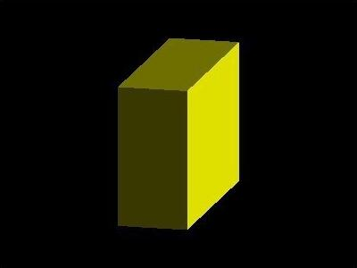

网格 Mesh(geometry, material)
网格是由顶点、边、面组成的物体，创建物体需要指定几何形状和材质
几何形状决定了物体的顶点位置等信息，材质决定了物体的颜色、纹理等信息
网格是最常用的一种物体，其他物体还有线段Line、骨骼Bone、粒子系统ParticleSystem等

可以在构造函数中指定材质，也可以在网格被创建后，对材质进行修改
THREE.Mesh继承自THREE.Object3D
位置position、缩放scale、旋转rotation是物体的三个常用属性，它们都是Mesh.Vector3的实例